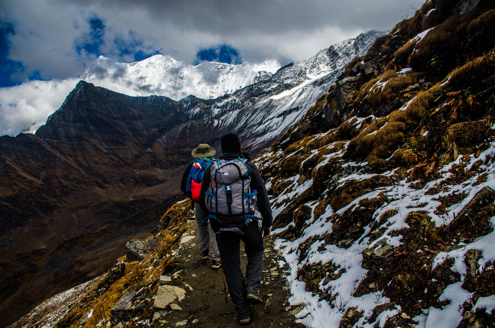

Refugio de Montaña Frey
Al pie de la emblemática aguja Frey, imán de escaladores, y a 1.700 msnm, este refugio fue inaugurado en 1957…

Excursión
Ascenso en 4×4 en Land Rover Defender + trekking.

Mas recomendaciones
Una buena alternativa para quienes disfrutan del trekking y de la montaña, es la de recorrer por picadas transitables y señalizadas los distintos cerros que se encuentran en la región, donde se pueden encontrar cascadas, lagunas… y lugares increíbles